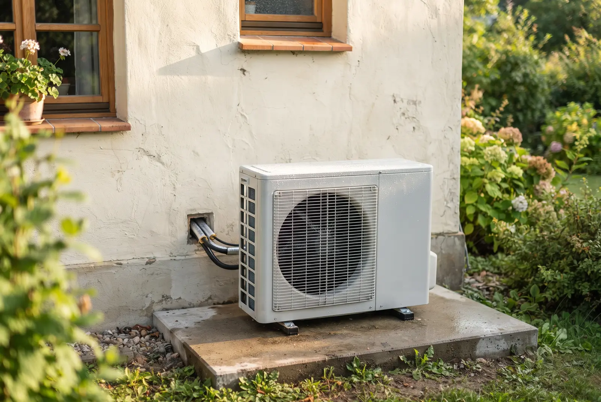
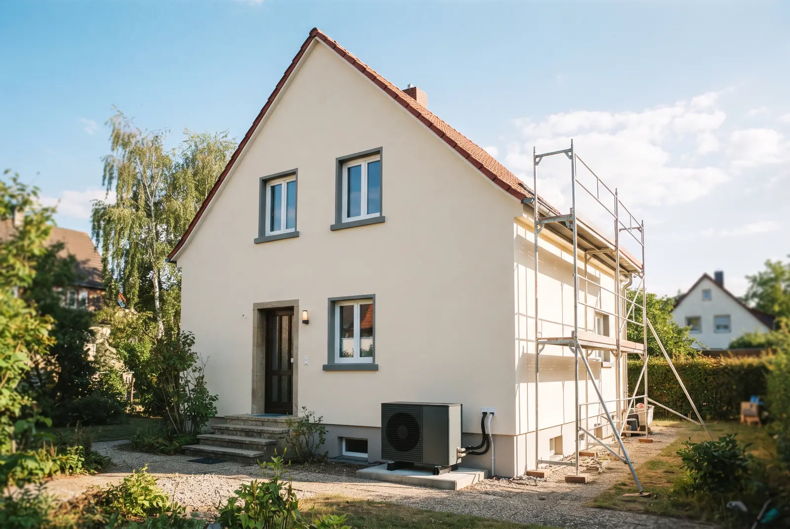

Inhaltsverzeichnis
- Warum der Richtwert 20.000–40.000 Euro oft in die Irre führt
- Kostenblock 1 — Das Gerät: Anschaffung nach Wärmepumpentyp
- Kostenblock 2 — Installation und Nebenarbeiten
- Kostenblock 3 — Vorbereitende Sanierungsmaßnahmen
- Förderung: Was KfW und BEG wirklich abdecken
- Schritt für Schritt: Ihre persönliche Kostenkalkulation
- Betriebskosten: Was nach der Installation wirklich zählt
- Fazit: Was eine Wärmepumpe im Altbau realistisch kostet
Das Wichtigste in Kürze
- Vier Kostenblöcke statt Pauschale: Rechnen Sie Gerät, Installation, vorbereitende Sanierung und Betrieb getrennt — die viel zitierte Spanne von 20.000–40.000 Euro ist als Planungsgrundlage nahezu wertlos.
- Gesamtkosten vor Förderung: Mit wasserführender Luft-Wasser-Wärmepumpe liegen sie im Bestands-Einfamilienhaus realistisch bei 35.000 bis 55.000 Euro (Beispielrechnung: rund 35.000 Euro). Eine Luft-Luft-Wärmepumpe (Multisplit) kostet komplett installiert nur etwa 10.000–20.000 Euro — plus separate Warmwasser-Lösung für 2.500–5.000 Euro. Beide Systeme werden über KfW 458 gleichermaßen gefördert.
- Förderung bis 80 Prozent: Über die KfW-Heizungsförderung 458 sind für Förderanträge ab dem 21. Juli 2026 im Einfamilienhaus nach aktuellem Stand maximal 22.400 Euro Zuschuss möglich (30 % Grundförderung, 16 % Klimageschwindigkeitsbonus, bis zu 40 % Einkommensbonus — gedeckelt bei 80 % von 28.000 Euro förderfähigen Kosten). Der Antrag muss vor dem Beginn der Umsetzung gestellt werden (Vertrag mit Vorbehalt der Förderzusage).
- Eigenanteil: Im Luft-Wasser-Rechenbeispiel sinkt er bei 46 % Förderung (Grund- plus Klimageschwindigkeitsbonus) auf 22.120 Euro, beim maximalen Fördersatz von 80 % auf 12.600 Euro. Im Luft-Luft-Beispiel (16.000 Euro Anlage) sind es bei 46 % nur 8.640 Euro — inklusive Warmwasser-Lösung rund 12.100 Euro, also oft etwa die Hälfte.
- Betriebskosten: Bei 20.000 kWh Wärmebedarf und einer Jahresarbeitszahl von 3,0 rund 2.330 Euro Strom pro Jahr (35 ct/kWh Haushaltsstrom, Stand 2026) plus 200–400 Euro Wartung — über zehn Jahre meist günstiger als eine Gasheizung.
Stand der Angaben (12. Juli 2026): Bundestag und Bundesrat haben am 10. Juli 2026 das neue Gebäudemodernisierungsgesetz (GModG) beschlossen, und die reformierten KfW-Förderbedingungen gelten laut BMWE und KfW für neue Anträge ab dem 21. Juli 2026. Das Gesetz ist jedoch noch nicht verkündet und die geänderte Förderrichtlinie noch nicht im Bundesanzeiger veröffentlicht – alle Zahlen geben den aktuellen Stand des Wissens wieder, ohne Gewähr. Die Förderung steht außerdem unter dem Vorbehalt verfügbarer Bundesmittel; ein Rechtsanspruch besteht nicht. Welche Konditionen für Ihr Vorhaben konkret gelten, prüfen wir gern tagesaktuell für Sie.
Warum der Richtwert 20.000–40.000 Euro oft in die Irre führt
Wer sich für eine Wärmepumpe im Altbau interessiert, stößt überall auf dieselbe grobe Spanne: 20.000 bis 40.000 Euro. Diese Zahl ist nicht falsch, aber sie ist als Planungsgrundlage fast wertlos. Sie verschweigt, welche Posten enthalten sind und welche nicht — und genau daran scheitern viele Kostenschätzungen. Ein älteres Gebäude verhält sich beim Heizungstausch völlig anders als ein Neubau, und diese Unterschiede entscheiden über mehrere Tausend Euro.
Der Hauptgrund für die große Streuung ist der bauliche Zustand. Ein gut gedämmter Altbau mit modernen Fenstern hat einen spezifischen Wärmebedarf von rund 0,06 kW pro Quadratmeter, ein ungedämmtes Haus aus den 1960er-Jahren dagegen das Doppelte. Daraus folgt eine größere Pumpenleistung, ein größerer Pufferspeicher und in manchen Fällen vorbereitende Arbeiten an Heizkörpern oder Hülle. All das steckt in der Pauschalspanne nicht drin.
Wir empfehlen Ihnen deshalb, die Gesamtkosten nicht als eine Zahl zu denken, sondern in vier Blöcken zu kalkulieren. So sehen Sie, an welcher Stelle Ihr Haus teurer oder günstiger ausfällt — und welche Posten sich durch Förderung deutlich reduzieren lassen:
- Block 1 — Gerät: die eigentliche Wärmepumpe je nach Typ.
- Block 2 — Installation: Montage, hydraulischer Abgleich, Pufferspeicher, Entsorgung.
- Block 3 — Sanierung: Heizkörpertausch oder Dämmung, sofern nötig.
- Block 4 — Betrieb: Strom und Wartung über die Nutzungsdauer.
Gut zu wissen: Die einzige belastbare Grundlage für eine echte Kostenschätzung ist die raumweise Heizlastberechnung nach DIN EN 12831. Ohne sie bleibt jede Zahl eine Schätzung — und teure Überdimensionierung droht.
Kostenblock 1 — Das Gerät: Anschaffung nach Wärmepumpentyp
Der erste und sichtbarste Posten ist die Wärmepumpe selbst. Welcher Typ infrage kommt, hängt von Grundstück, Budget und gewünschter Effizienz ab. Für den Bestand sind die beiden Luft-Systeme die erste Wahl, weil sie ohne aufwendige Erdarbeiten auskommen: Die Luft-Luft-Wärmepumpe ist dabei meist die günstigste Lösung, die Luft-Wasser-Wärmepumpe der naheliegende Weg, wenn Heizkörper und Wasserkreis weiter genutzt werden sollen.
Luft-Luft-Wärmepumpe (Multisplit): 10.000–20.000 Euro komplett installiert
Sie heizt die Räume direkt über Innengeräte – ohne Wasserkreis, Pufferspeicher und Vorlauftemperatur-Hürde – und ist fürs ganze Einfamilienhaus mit rund 10.000 bis 20.000 Euro installiert meist die günstigste Wärmepumpen-Lösung (Orientierungswert). Ehrlich dazu gehört: Warmwasser wird separat gelöst, z. B. mit einer Brauchwasser-Wärmepumpe für 2.500–5.000 Euro, die vorhandenen Heizkörper bleiben ungenutzt und in jedem Hauptraum hängt ein sichtbares Innengerät. Gefördert wird sie über KfW 458 genauso wie andere Wärmepumpen, sofern das Gerät auf der BAFA-Liste förderfähiger Wärmepumpen steht und als Heizung die alte Anlage ersetzt.
Luft-Wasser-Wärmepumpe: 8.000–16.000 Euro
Sie ist der Standard im Altbau. Die Außenluft als Wärmequelle erfordert keine Bohrung und keine Genehmigung, weshalb die reinen Gerätekosten überschaubar bleiben. Der Nachteil: An sehr kalten Tagen sinkt die Effizienz etwas, was sich über die Auslegung und einen sauberen hydraulischen Abgleich aber gut abfangen lässt.
Sole-Wasser-Wärmepumpe: 18.000–28.000 Euro
Diese Erdwärmepumpe nutzt das konstant temperierte Erdreich und erreicht damit höhere Jahresarbeitszahlen. Allerdings kommen die Kosten für Erdsondenbohrung oder Flächenkollektoren hinzu, die mehrere Tausend Euro betragen können und eine ausreichend große Fläche oder Bohrgenehmigung voraussetzen.
Wasser-Wasser-Wärmepumpe: 20.000–35.000 Euro
Sie ist die effizienteste, aber auch aufwendigste Lösung und nur dort möglich, wo Grundwasser in passender Menge und Qualität verfügbar ist. Für den typischen Bestand spielt sie selten eine Rolle.
Hochtemperatur-Wärmepumpe: wann sie relevant wird
Brauchen Sie wegen alter Heizkörper eine Vorlauftemperatur von 65 bis 70 °C, ist eine Hochtemperatur-Variante sinnvoll. Sie kostet etwas mehr, erspart Ihnen aber oft den Austausch zahlreicher Heizkörper — was unterm Strich die günstigere Gesamtlösung sein kann.
Gut zu wissen: Achten Sie bei Angeboten darauf, dass Leistung und Lieferumfang identisch ausgewiesen sind — nur dann sind die Preise wirklich vergleichbar.
Unser Tipp: Ob Luft-Luft oder Luft-Wasser besser zu Ihrem Gebäude passt, klären wir im Detail in unserem Beitrag zum Vergleich der Wärmepumpentypen im Altbau.

Kostenblock 2 — Installation und Nebenarbeiten
Dieser Block wird in Pauschalspannen am häufigsten unterschätzt, obwohl er einen erheblichen Teil der Gesamtkosten ausmacht. Hier entscheidet die handwerkliche Qualität darüber, wie effizient Ihre Anlage später tatsächlich läuft. Sparen an der falschen Stelle rächt sich über die gesamte Nutzungsdauer mit höheren Stromrechnungen.
Montage und Inbetriebnahme: 3.000–6.000 Euro
Dazu gehören das Aufstellen von Außen- und Innengerät, der Anschluss an das vorhandene Heizsystem, elektrische Arbeiten und die fachgerechte Inbetriebnahme. Je nach baulicher Situation und Leitungswegen variiert dieser Posten spürbar.
Hydraulischer Abgleich: 800–3.500 Euro
Der hydraulische Abgleich ist im Bestand keine Kür, sondern Pflicht für die Förderung — und ein wichtiger Hebel für die Effizienz. Wie viel er bringt, hängt davon ab, wie gut das bestehende System vorher abgeglichen war: Er kann die nötige Vorlauftemperatur senken, die Jahresarbeitszahl verbessern und so die Stromkosten reduzieren — eine feste Ersparnis ist aber nicht garantiert. Im Altbau mit vielen Heizkörpern fällt er aufwendiger aus als im Neubau.
Pufferspeicher und Warmwasserbereitung: 1.000–3.000 Euro
Ein Pufferspeicher entkoppelt Erzeugung und Verbrauch und sorgt für ruhigere Laufzeiten. Zusammen mit einem Warmwasserspeicher liegt dieser Posten häufig im oberen Bereich der Spanne — gerade in größeren Bestandsgebäuden mit hohem Warmwasserbedarf.
Entsorgung der alten Heizung: 500–2.000 Euro
Der fachgerechte Ausbau und die Entsorgung von altem Kessel, Tank und Zubehör werden gern vergessen. Bei einem stillzulegenden Öltank kann dieser Posten am oberen Ende liegen, weil zusätzlich die Tankreinigung anfällt.
Kostenblock 3 — Vorbereitende Sanierungsmaßnahmen
Hier liegt der größte Unsicherheitsfaktor — und gleichzeitig die häufigste Sorge: Muss erst aufwendig saniert werden, bevor die Pumpe einziehen kann? Die ehrliche Antwort: meist deutlich weniger als befürchtet. Entscheidend ist nicht, ob das Haus perfekt gedämmt ist, sondern ob die Vorlauftemperatur niedrig genug bleibt.
Wann müssen Heizkörper getauscht werden? 100–500 Euro pro Stück
Reichen die vorhandenen Heizkörper aus, um die Räume bei moderater Vorlauftemperatur warm zu halten, müssen Sie nichts tauschen. Sind einzelne Räume kritisch, genügt oft der gezielte Austausch weniger Heizkörper gegen großflächige Niedertemperatur-Modelle. Ein flächendeckender Tausch ist die Ausnahme, nicht die Regel.
Dämmung als Effizienz-Hebel
Eine bessere Dämmung senkt den Wärmebedarf und damit dauerhaft die Betriebskosten. Sie ist jedoch keine Voraussetzung dafür, dass die Anlage überhaupt funktioniert. Sinnvoll ist Dämmung dort, wo sie ohnehin ansteht — etwa bei der obersten Geschossdecke oder der Kellerdecke, die mit überschaubarem Aufwand viel bringen.
Fußbodenheizung nachrüsten: 80–150 Euro pro Quadratmeter
Eine Fußbodenheizung ist ideal für niedrige Vorlauftemperaturen, aber im Bestand selten zwingend und als alleinige Maßnahme oft unwirtschaftlich. Wenn Sie ohnehin den Boden erneuern, kann sie sich lohnen — sonst sind großflächige Heizkörper der pragmatischere Weg.
Gut zu wissen: Die Entscheidungsregel lautet immer: erst die Heizlastberechnung, dann die Maßnahmen. Erst sie zeigt, ob und wo wirklich saniert werden muss — und schützt Sie vor überflüssigen Investitionen.
Unser Tipp: Ob bei Ihnen erst die Dämmung oder direkt die Wärmepumpe sinnvoll ist, beantwortet unser Beitrag zur richtigen Sanierungsreihenfolge im Altbau.
Förderung: Was KfW und BEG wirklich abdecken
Die Förderung ist der Posten, der den Eigenanteil am stärksten senkt — und gleichzeitig der, bei dem die meisten Fehler passieren. Der Heizungszuschuss der Bundesförderung für effiziente Gebäude (BEG) läuft über die KfW im Programm 458 — und wurde im Juli 2026 grundlegend reformiert: Die folgenden Konditionen gelten laut KfW für Förderanträge ab dem 21. Juli 2026. Wer die Bausteine kennt und die Reihenfolge einhält, holt das Maximum heraus.
Grundförderung: 30 Prozent auf maximal 28.000 Euro
Jeder, der eine bestehende Heizung gegen eine Wärmepumpe tauscht, erhält 30 Prozent Grundförderung. Die förderfähigen Kosten sind im Einfamilienhaus bei 28.000 Euro gedeckelt (bei Mehrfamilienhäusern gestaffelt: je 15.000 Euro für die zweite bis sechste und je 8.000 Euro ab der siebten Wohneinheit), sodass die Grundförderung im Einfamilienhaus maximal 8.400 Euro ergibt. Wichtig für die Planung: Der Höchstbetrag von 28.000 Euro sinkt laut KfW erstmals zum 1. Februar 2027 und danach halbjährlich um jeweils 750 Euro — wer früher beantragt, sichert sich die höhere Bemessungsgrundlage.
Klimageschwindigkeitsbonus: plus 16 Prozent — sinkt ab Februar 2027
Selbstnutzende Eigentümer, die eine funktionstüchtige Öl-, Kohle- oder Nachtspeicherheizung beziehungsweise Gasetagenheizung oder eine mindestens 20 Jahre alte Gas- oder Biomasse-Zentralheizung vorzeitig ersetzen, bekommen nach aktuellem Stand zusätzlich 16 Prozent (bisher 20 Prozent). Dieser Bonus sinkt erstmals zum 1. Februar 2027 und danach halbjährlich um jeweils 4 Prozentpunkte — ein früher Tausch lohnt sich also mehr denn je.
Weggefallen: Effizienzbonus und Emissionsminderungszuschlag
Der frühere Effizienzbonus von 5 Prozent für natürliche Kältemittel wie Propan (R290) oder für Erdreich-, Wasser- und Abwasser-Wärmequellen ist mit der Reform ebenso entfallen wie der Emissionsminderungszuschlag für Biomasseheizungen. Wärmepumpen mit natürlichem Kältemittel bleiben technisch sinnvoll und werden ab 2027 teilweise regulatorischer Standard — einen zusätzlichen Fördersatz bringen sie für Anträge ab dem 21. Juli 2026 aber nicht mehr.
Einkommensbonus: jetzt dreistufig mit bis zu 40 Prozent
Der Einkommensbonus für selbstnutzende Eigentümer ist nach der Reform dreistufig gestaffelt — nach dem zu versteuernden Haushaltsjahreseinkommen: 40 Prozent bis 30.000 Euro, 30 Prozent bis 40.000 Euro und 10 Prozent bis 50.000 Euro. Neu ist außerdem der Familienzuschlag: Lebt mindestens ein minderjähriges Kind im Haushalt, sinkt das anzusetzende Einkommen einmalig um 10.000 Euro — eine Familie mit 40.000 Euro zu versteuerndem Einkommen rutscht so in die 40-Prozent-Stufe. Alle Bausteine zusammen sind gedeckelt: bei 80 Prozent, solange das anzusetzende zu versteuernde Haushaltsjahreseinkommen höchstens 30.000 Euro beträgt (mit minderjährigem Kind also bis 40.000 Euro), darüber bei 70 Prozent. Im Einfamilienhaus sind das maximal 22.400 Euro Zuschuss.
| Förderbaustein | Anteil | Maximaler Zuschuss |
|---|---|---|
| Grundförderung | 30 % | 8.400 € |
| Klimageschwindigkeitsbonus | +16 % | 4.480 € |
| Einkommensbonus (je nach Einkommen 10/30/40 %) | bis +40 % | bis 11.200 € |
| Maximum (gedeckelt) | 80 % | 22.400 € |
Alle Beträge bezogen auf die förderfähigen Höchstkosten von 28.000 Euro im Einfamilienhaus (Stand: Anträge ab dem 21. Juli 2026, vor der ersten Absenkung zum 1. Februar 2027). Rechnerisch ergäben 30 + 16 + 40 Prozent zwar 86 Prozent — ausgezahlt werden laut KfW aber höchstens 80 Prozent; oberhalb eines anzusetzenden zu versteuernden Einkommens von 30.000 Euro höchstens 70 Prozent.
Was kostet Warten? Die Förderung sinkt ab Februar 2027
Für Ihre Kalkulation gehört eine Zahl mit auf den Zettel: der Zeitpunkt der Antragstellung. Klimageschwindigkeitsbonus und förderfähiger Höchstbetrag sinken laut KfW erstmals zum 1. Februar 2027 und danach halbjährlich weiter — das gilt für die Luft-Luft- wie für die Luft-Wasser-Wärmepumpe gleichermaßen. Am Standardbeispiel (Selbstnutzer, 30 % Grundförderung plus Klimageschwindigkeitsbonus, ohne Einkommensbonus) heißt das konkret:
| Antragszeitpunkt | Fördersatz (Standard) | Förderfähige Höchstkosten | Zuschuss | Differenz |
|---|---|---|---|---|
| bis 31. Januar 2027 | 46 % (30 + 16) | 28.000 € | 12.880 € | — |
| 1. Februar bis 31. Juli 2027 | 42 % (30 + 12) | 27.250 € | 11.445 € | − 1.435 € |
| ab 1. August 2027 | 38 % (30 + 8) | 26.500 € | 10.070 € | − 2.810 € |
Einkommensbonus und Familienzuschlag kommen gegebenenfalls zusätzlich hinzu und verschieben die absoluten Beträge nach oben — die Richtung bleibt dieselbe. Ehrlich eingeordnet: Wer den Heizungstausch ohnehin plant, spart durch eine frühe Antragstellung im Standardfall 1.435 Euro gegenüber dem Frühjahr 2027 und 2.810 Euro gegenüber dem Spätsommer 2027. Ein Grund für überstürzte Entscheidungen ist das aber nicht — eine falsch dimensionierte Anlage kostet über ihre Laufzeit deutlich mehr, als die Degression ausmacht. Die richtige Reihenfolge bleibt: erst Heizlastberechnung, dann Angebot mit Vorbehalt der Förderzusage, dann Antrag.
Gut zu wissen: Die wichtigste Spielregel: Lassen Sie das Angebot vor der Unterschrift auf Förderfähigkeit prüfen – das übernehmen wir bei EffiNova ebenso wie die raumweise Heizlastberechnung, die absichert, dass die Leistung der Wärmepumpe optimal angesetzt ist. Der Vertrag mit dem Fachbetrieb muss unter dem Vorbehalt der Förderzusage stehen (aufschiebende oder auflösende Bedingung), und der Antrag muss vor dem Beginn der Umsetzung im KfW-Portal gestellt werden. Wer ohne Antrag mit dem Einbau startet, verliert den Anspruch. Der hydraulische Abgleich ist zudem Fördervoraussetzung.
Unser Tipp: Den vollständigen Ablauf vom Antrag bis zur Auszahlung erklären wir im Beitrag zum Beantragen der Wärmepumpen-Förderung.
Was bleibt für Ihren Altbau nach Förderung als Eigenanteil übrig?
Kostenlose Förder-Berechnung für Ihr Haus — mit den ab 21. Juli geltenden Sätzen, individuell für Ihr Gebäude.
Kostenlose Förder-BerechnungSchritt für Schritt: Ihre persönliche Kostenkalkulation
Mit den vier Blöcken können Sie eine erste eigene Schätzung aufstellen. Die folgende Reihenfolge führt Sie von der Auslegung bis zum Eigenanteil — und genau in dieser Reihenfolge sollten Sie auch vorgehen. Die belastbare individuelle Kostenberechnung mit Heizlast und maximaler Förderung übernehmen wir auf Wunsch gern für Sie.
Schritt 1: Heizlastberechnung — welche Pumpenleistung brauche ich?
Lassen Sie zuerst die Heizlast nach DIN EN 12831 bestimmen. Sie legt die benötigte Leistung fest und verhindert, dass die Anlage zu groß und damit unnötig teuer ausgelegt wird. Diese Berechnung ist die Basis jeder seriösen Kalkulation. Bei einer Luft-Luft-Wärmepumpe wird die Leistung übrigens nicht über einen zentralen Wasserkreis abgebildet, sondern je beheiztem Hauptraum ein Innengerät angesetzt — als Richtwert rund 3.000 Euro pro Raum; die raumweise Heizlast bleibt auch hier die Grundlage für die Auslegung der Geräte.
Schritt 2: Wärmepumpentyp und Gerätekosten
Wählen Sie auf Basis der Heizlast den passenden Typ — im Bestand meist eine Luft-Luft- oder Luft-Wasser-Wärmepumpe — und tragen Sie die Gerätekosten aus einem belastbaren Angebot ein.
Schritt 3: Installations- und Sanierungskosten addieren
Rechnen Sie Montage, hydraulischen Abgleich, Pufferspeicher, Entsorgung und — falls die Heizlastberechnung es zeigt — den Austausch einzelner Heizkörper hinzu. So erhalten Sie die Gesamtkosten vor Förderung.
Schritt 4: Förderung abziehen — Beispielrechnung Luft-Wasser-Einfamilienhaus
Ein typisches Einfamilienhaus mit Luft-Wasser-Wärmepumpe kann so aussehen:
| Posten | Betrag |
|---|---|
| Gerät (Luft-Wasser) | 15.000 € |
| Montage und Inbetriebnahme | 6.000 € |
| Hydraulischer Abgleich | 2.500 € |
| Pufferspeicher und Warmwasser | 3.500 € |
| Entsorgung alte Heizung (inkl. Öltank) | 2.000 € |
| Heizkörpertausch (mehrere Räume) | 6.000 € |
| Gesamtkosten vor Förderung | 35.000 € |
| Förderfähige Kosten (gedeckelt) | 28.000 € |
| KfW 458, 46 % (Grund- + Klimageschwindigkeitsbonus) | − 12.880 € |
| Eigenanteil | 22.120 € |
Je nach Einkommen sind zwischen 46 und 80 Prozent der förderfähigen Kosten drin (Selbstnutzer mit Bonus-Anspruch): Mit dem maximalen Fördersatz von 80 Prozent — also 22.400 Euro Zuschuss — sinkt der Eigenanteil in diesem Beispiel auf 12.600 Euro. Sie sehen: Die viel zitierte Pauschalspanne löst sich auf, sobald Sie sauber rechnen.
Zum Vergleich: Beispielrechnung Luft-Luft-Wärmepumpe (Multisplit)
Dieselbe Rechnung für ein Einfamilienhaus mit Luft-Luft-Wärmepumpe — alle Werte als Orientierung, gefördert über KfW 458 zu denselben Sätzen (Gerät auf der BAFA-Liste vorausgesetzt):
| Posten | Betrag |
|---|---|
| Multisplit-Anlage fürs ganze Haus (Geräte + Montage) | 16.000 € |
| Förderfähige Kosten (unter dem 28.000-€-Deckel) | 16.000 € |
| KfW 458, 46 % (Grund- + Klimageschwindigkeitsbonus) | − 7.360 € |
| Eigenanteil Wärmepumpe | 8.640 € |
| Warmwasser separat, z. B. Brauchwasser-Wärmepumpe | ca. 3.500 € |
| Gesamt-Eigenanteil inkl. Warmwasser | rund 12.100 € |
Im Best Case von 80 Prozent Förderung sinkt der Eigenanteil für die Anlage auf 3.200 Euro (16.000 Euro minus 12.800 Euro Zuschuss) — plus die separate Warmwasser-Lösung. Der Vergleich zeigt: Der Gesamt-Eigenanteil liegt bei der Luft-Luft-Lösung mit rund 12.100 Euro oft nur bei etwa der Hälfte der Luft-Wasser-Variante (22.120 Euro). Konservativ gerechnet setzen wir dabei nur die Wärmepumpen-Anlage als förderfähig an — ob und wie die Warmwasser-Lösung in die förderfähigen Kosten einfließt, ist eine Einzelfallfrage, die wir gern für Sie prüfen.
Unser Tipp: Ob die Förderung als Zuschuss reicht oder ein ergänzender KfW-Kredit sinnvoll ist, beleuchten wir im Beitrag zur Finanzierung über den KfW-Kredit.

Betriebskosten: Was nach der Installation wirklich zählt
Die Anschaffung ist nur die halbe Wahrheit. Über die Nutzungsdauer entscheiden die laufenden Kosten darüber, ob sich die Investition lohnt — und genau hier spielt die Wärmepumpe ihre Stärke aus. Wer den Verbrauch realistisch kalkuliert, vermeidet böse Überraschungen auf der Stromrechnung.
Stromverbrauch: Wärmebedarf geteilt durch Jahresarbeitszahl
Den jährlichen Stromverbrauch schätzen Sie einfach ab, indem Sie den Wärmebedarf durch die Jahresarbeitszahl teilen. Bei 20.000 kWh Wärmebedarf und einer Jahresarbeitszahl von 3,0 ergeben sich rund 6.667 kWh Strom — beim durchschnittlichen Haushaltsstrompreis von 35 ct/kWh (Stand 2026) entspricht das etwa 2.330 Euro pro Jahr. Je höher die Jahresarbeitszahl, desto niedriger Ihre Stromrechnung.
So drücken Sie die laufenden Kosten
Mehrere Stellschrauben senken die Betriebskosten deutlich:
- Ein spezieller Wärmepumpen-Stromtarif liegt oft mehrere Cent unter dem Haushaltstarif.
- Eine Photovoltaikanlage deckt einen Teil des Strombedarfs direkt vom eigenen Dach.
- Ein sauberer hydraulischer Abgleich kann die Jahresarbeitszahl heben und die Stromkosten senken — je nachdem, wie gut das System vorher abgeglichen war.
Wartungskosten: 200–400 Euro pro Jahr
Wärmepumpen sind wartungsarm. Für die jährliche Inspektion und kleine Servicearbeiten sollten Sie 200 bis 400 Euro einplanen — dafür entfallen die Schornsteinfeger- und Abgasmesskosten einer fossilen Heizung komplett.
Zehn-Jahres-Vergleich: Wärmepumpe gegen Gasheizung
Über zehn Jahre betrachtet liegt die Wärmepumpe trotz höherer Anschaffung meist vorn. Eine Gasheizung verursacht bei gleichem Wärmebedarf rund 2.600 bis 3.000 Euro Brennstoffkosten pro Jahr, dazu steigende CO₂-Abgaben. Die Wärmepumpe kombiniert niedrigere laufende Kosten mit der hohen Förderung — je nach Fördersatz und Stromtarif kann sich der Mehrpreis gegenüber einer neuen Gasheizung so schon innerhalb weniger Jahre amortisieren.
Fazit: Was eine Wärmepumpe im Altbau realistisch kostet
Die ehrliche Zahl für eine wasserführende Luft-Wasser-Wärmepumpe im Einfamilienhaus-Bestand lautet: vor Förderung 35.000 bis 55.000 Euro, je nach Zustand des Gebäudes und Umfang der Nebenarbeiten. Diese Spanne wirkt nur deshalb so groß, weil sie alle Fälle vom gut gedämmten bis zum unsanierten Haus abdeckt. Deutlich darunter startet die Luft-Luft-Wärmepumpe: rund 10.000 bis 20.000 Euro komplett installiert, plus separate Warmwasser-Lösung für 2.500 bis 5.000 Euro. Sobald Sie in vier Blöcken rechnen, wird daraus eine belastbare Zahl für Ihr konkretes Projekt.
Entscheidend ist der Eigenanteil — und der fällt mit der KfW-Förderung von nach aktuellem Stand bis zu 80 Prozent der förderfähigen Kosten (für Förderanträge ab dem 21. Juli 2026) oft überraschend niedrig aus. Im Luft-Wasser-Rechenbeispiel bleiben je nach Fördersatz zwischen 22.120 Euro (46 Prozent) und 12.600 Euro (80 Prozent) Eigenanteil, im Luft-Luft-Beispiel inklusive Warmwasser-Lösung rund 12.100 Euro (46 Prozent) — im Best Case 3.200 Euro plus Warmwasser. Wer früh plant, den Antrag vor dem Beginn der Umsetzung stellt und die Heizlast korrekt berechnen lässt, holt das Maximum heraus — zumal Höchstbetrag und Klimageschwindigkeitsbonus ab Februar 2027 schrittweise sinken.
Unser Tipp: Ob sich der Umstieg für Ihr Gebäude lohnt, ordnet unser Hauptartikel zur Wärmepumpe im Altbau umfassend ein. Eine schnelle erste Einschätzung liefert Ihnen unser Selbstcheck zur Eignung Ihres Altbaus.
Was kostet eine Wärmepumpe im Altbau insgesamt?
Vor Förderung liegen die Gesamtkosten für ein Einfamilienhaus mit wasserführender Luft-Wasser-Wärmepumpe typischerweise zwischen 35.000 und 55.000 Euro. Darin enthalten sind Gerät (8.000–28.000 €), Installation (3.000–6.000 €), hydraulischer Abgleich (800–3.500 €), Pufferspeicher (1.000–3.000 €) und gegebenenfalls ein Heizkörpertausch. Eine Luft-Luft-Wärmepumpe (Multisplit) ist mit rund 10.000–20.000 € plus separater Warmwasser-Lösung (2.500–5.000 €) deutlich günstiger. Nach einer KfW-Förderung von nach aktuellem Stand bis zu 22.400 Euro (für Förderanträge ab dem 21. Juli 2026) kann der Eigenanteil in den niedrigen fünfstelligen Bereich sinken.
Was kostet eine Luft-Luft-Wärmepumpe im Vergleich?
Eine Luft-Luft-Wärmepumpe (Multisplit fürs ganze Haus) kostet installiert etwa 10.000 bis 20.000 Euro — als Richtwert rund 3.000 Euro je beheiztem Hauptraum (Orientierung Einfamilienhaus). Dazu kommt eine separate Warmwasser-Lösung, etwa eine Brauchwasser-Wärmepumpe für 2.500 bis 5.000 Euro. Gefördert wird sie über KfW 458 genauso wie eine Luft-Wasser-Wärmepumpe, wenn das Gerät auf der BAFA-Liste förderfähiger Wärmepumpen steht und die alte Heizung ersetzt: Bei 16.000 Euro Anlagenkosten und 46 Prozent Förderung bleiben 8.640 Euro Eigenanteil — mit Warmwasser-Lösung rund 12.100 Euro gesamt und damit oft etwa die Hälfte der Luft-Wasser-Variante.
Ist eine Wärmepumpe im Altbau wirklich sinnvoll?
Ja, sofern die Heizlast bekannt ist und — bei wasserführenden Systemen — die Heizkörper ausreichend dimensioniert sind sowie ein hydraulischer Abgleich durchgeführt wird. Moderne Hochtemperatur-Geräte erreichen bis zu 70 °C Vorlauftemperatur und arbeiten auch im unsanierten Bestand zuverlässig; alternativ umgeht eine Luft-Luft-Wärmepumpe die Vorlauftemperatur-Frage ganz, weil sie die Räume direkt beheizt. Im Zehn-Jahres-Vergleich mit einer Gasheizung ist die Wärmepumpe trotz höherer Anschaffung meist günstiger.
Wie viel kW braucht eine Wärmepumpe im Altbau?
Das hängt vom spezifischen Wärmebedarf ab: Ein gedämmter Altbau benötigt rund 0,06 kW pro Quadratmeter, ein ungedämmtes Gebäude eher 0,12 kW. Für ein Haus mit 150 Quadratmetern ergeben sich so grob 9 bis 18 Kilowatt. Die genaue Leistung legt erst die raumweise Heizlastberechnung nach DIN EN 12831 fest — eine Überdimensionierung verteuert Anschaffung und Betrieb unnötig.
Brauche ich für eine Wärmepumpe im Altbau eine Fußbodenheizung?
Nein. Vorhandene Heizkörper reichen häufig aus, sofern die Vorlauftemperatur unter 55 bis 60 °C bleibt. Einzelne unterdimensionierte Heizkörper lassen sich gezielt gegen Niedertemperatur-Modelle tauschen (100–500 € pro Stück). Eine Fußbodenheizung nachzurüsten kostet 80–150 € pro Quadratmeter und lohnt sich selten als alleinige Maßnahme.
Wie viel Strom verbraucht eine Wärmepumpe im Altbau pro Jahr?
Den Verbrauch schätzen Sie ab, indem Sie den Wärmebedarf durch die Jahresarbeitszahl teilen. Bei 20.000 kWh Wärmebedarf und einer Jahresarbeitszahl von 3,0 sind das rund 6.667 kWh Strom, also etwa 2.330 Euro pro Jahr bei 35 ct/kWh Haushaltsstrom (Stand 2026). Mit einem Wärmepumpen-Sondertarif oder einer Photovoltaikanlage liegt der Wert deutlich niedriger.
Wie hoch ist die Förderung bei Heizungstausch 2026?
Für Förderanträge ab dem 21. Juli 2026 gilt nach aktuellem Stand: 30 bis 80 Prozent Zuschuss auf maximal 28.000 Euro förderfähige Kosten im Einfamilienhaus. Im Standardfall — Selbstnutzer mit 30 % Grundförderung plus 16 % Klimageschwindigkeitsbonus, also 46 % — sind das 12.880 Euro. Der Einkommensbonus ist dreistufig gestaffelt (40 % bis 30.000 €, 30 % bis 40.000 €, 10 % bis 50.000 € zu versteuerndem Haushaltseinkommen; mit minderjährigem Kind sinkt das anzusetzende Einkommen um 10.000 €), sodass gedeckelt bei 80 % maximal 22.400 Euro möglich sind.